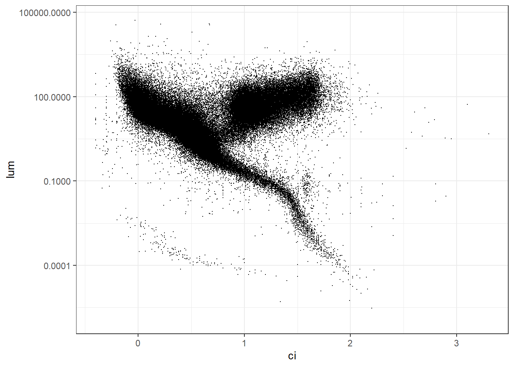

For a few Fridays each year, I teach a course in the American Museum of Natural History’s Masters of Arts in Teaching program to apply and continue thinking about my work as an Earth Science teacher and a teacher educator. In this course, I co-teach a course of Space Systems with an astrophysicist at the musem. For the last few years, this has been with the incredible Dr. Jackie Faherty, a museum educator and astrophysicist whose work focuses on the fields of brown dwarfs and exoplanets.
A couple of years ago, the museum received a grant to embed computational thinking in our science education courses. After many discussions around what we believe computational thinking to actually mean, Jackie brought up glue, a Python-based app designed for easy exploratory visualizations of large datasets. Thus, she designed a set of exercises that allows students to explore exoplanet databases to understand the differences between exoplanet systems and our own, and touching upon topics such as bias in measurement, calculations of a variable through an easy to approach GUI-interface.
This year, I recreated the exercises in R. My favorite is on recreating the Hertzsprung-Russell diagram. In class, they recreate it using an exoplanet database, but below, we recreate using a slightly larger catalog of stars that includes stars that we haven’t yet found exoplanets around.
Loading the data and finding the right margins
The dataset is a bit large, so I’m afraid you will need to download it yourself. I used the latest version of the HYG (Hipparcos, Yale, Gliese) Stellar database, as kept here. In glancing at the data, it looks like stars have a maximum distance that is creating a lot of outliers, so if you are recreating your graph using this dataset, please use the same filter in my code (I also filtered out variable stars, as they don’t have a set luminosity).
Now let’s graph it. The easiest way to plot an H-R diagram is with the color index, which is also related to surface temperature and spectral type, on the x-axis and the luminosity, which is also related to absolute magnitude1 on the y axis.
Code in R
library(tidyverse)# let's not work in scientific notation unless we specify itoptions(scipen =999)stars <-read_csv("data/hygdata_v41.csv") |>filter(dist <100000,is.na(var))p <-stars |>ggplot(aes(x=ci, y=lum)) +geom_point(size=0.02) +scale_y_log10() +theme_bw()p

That looks a bit like an H-R diagram
I want to use histograms to figure out where the limits of this should be and to get a sense of the distribution. To do that, I will use the excellent ggExtra package, where you can add in marginal plots.
Code in R
library(ggExtra)ggMarginal(p,type="histogram")
The y-axis looks to be pretty good, but the x axis could probably shrink to a color index with a maximum of 3.
Getting some color into this plot
Most H-R diagram plots hint at the color of the stars, which we should be able to do as well. Let’s try it out with scale_color_gradient2, which is designed for divergent palettes, from RColorBrewer.
Code in R
library(RColorBrewer)stars |>ggplot(aes(x=ci, y=lum,color=ci)) +geom_point(size=0.02, show.legend=FALSE) +scale_y_log10() +scale_x_continuous(limits=c(-.5,2.25))+scale_color_gradient2(low="blue", mid="white", high="red",midpoint=0.75) +theme_minimal() +theme(panel.background=element_rect(fill="black"),panel.grid=element_blank()) +labs(title="Hertzsprung-Russell Diagram",y="Luminosity (in comparison to Sun)",x="Color Index (blue magnitude - visual magnitude)")
Footnotes
If you are plotting absolute magnitude, remember to add in scale_y_reverse, as brighter stars have a lower magnitude.↩︎
Citation
BibTeX citation:
@online{russell2025,
author = {Russell, John},
title = {Constructing the {Hertzsprung-Russell} {Diagram}},
date = {2025-03-02},
url = {https://drjohnrussell.github.io/posts/2025-03-02-hertzsprung-russell/},
langid = {en}
}
![]()